An end-to-end 4D Gaussian splat pipeline built for production VFX deliverables: 90 synchronized cameras, locked registration across every frame, and full-resolution training at scale.
The pipeline started with Nerfstudio's splatfacto, training each frame independently. It proved the concept but the problems were immediate. Nerfstudio silently downscales source images during training, killing reconstruction fidelity before a single Gaussian is placed. On top of that, every independent per-frame solve produces its own arbitrary coordinate space with no shared temporal reference. The output looked like a flipbook from a different dimension each frame.
The rebuilt pipeline uses LichtFeld Studio as the sole training backend, driven entirely from the command line. RealityCapture handles master camera registration across the full 90-camera rig, exporting ST map EXRs for per-camera lens undistortion. Those calibrated poses are locked and reused across every frame, with no per-frame triangulation. LichtFeld trains each frame against the same master sparse reconstruction, so every frame lives in the same world space at full source resolution.
The production dataset runs 90 synchronized cameras with SAM2 subject masks propagated per camera for subject isolation. Output is a .ply sequence viewable in SuperSplat or PostShot for client and on-set review, and compressed for compositing delivery in Nuke or Flame. The full pipeline is scripted end-to-end in Python, phase-gated and built to run unattended.
Per-frame splatfacto produces no temporal consistency between frames, as each splat is an independent solve. The transition to SpacetimeGaussians trains all frames simultaneously in a unified 4D representation, which is the correct tool for dynamic volumetric sequences in VFX production.
Pipeline R&D Lead: capture system design, camera registration, training pipeline, Python automation, and delivery.
Internal R&D at Industrial Pixel 3D Studios, Vancouver. Built for production VFX and virtual production deliverables.
